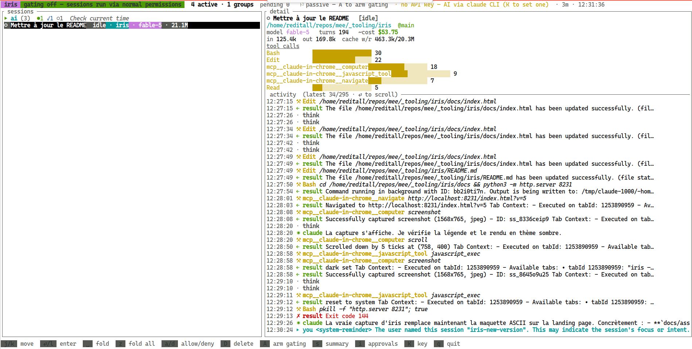

A fast terminal dashboard that supervises all your active Claude Code sessions — what each one is doing, its tokens and cost, an AI summary of where it's headed, and one-key tool approvals.

The real thing — iris supervising two live sessions, including the one that built this page.
Tails session transcripts and shows the latest prompt, thinking, tool call, and result as it happens.
Per-session model, working/idle state, token breakdown, and an estimated USD cost.
A histogram of which tools each session leans on — spot the one stuck in a build loop.
Press s for a Haiku-generated “doing / done / next” briefing of any session.
A PreToolUse hook routes permission prompts to iris — approve or deny from one place, with an AI risk read.
A heartbeat means sessions fall back to their normal prompt the instant iris isn't running.
cargo install iris-tui # installs the `iris` binary
iris # live dashboard
iris ls # one-shot table, no TUISingle static binary. Built with Rust + ratatui. Reads the transcripts Claude Code writes under ~/.claude/projects/.
| j k | move between sessions |
| ⏎ | open the approval detail (full input + AI risk read) |
| a d | allow / deny the pending tool call |
| s | AI summary of the selected session |
| i | enable / disable approval interception |
| K | set your Anthropic API key (saved 0600) |
| r | force refresh |
| q | quit |